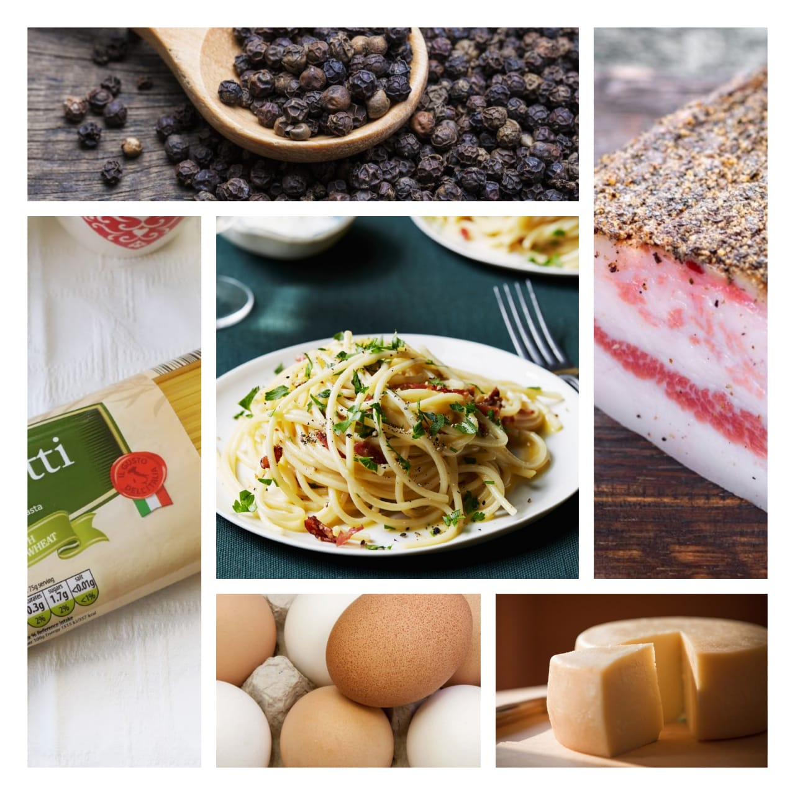

carbonara
Home
This traditional carbonara recipe was created in the Lazio region (the area around Rome) in the middle of the 20th century, after World War II. We don't use cream, milk, garlic, onions, or other extra ingredients; we use only guanciale, eggs, Pecorino Romano cheese, and lots of black pepper (carbonaro is Italian for coal miner). This isn't the Italian-American version, it's the real, creamy carbonara and it comes right from Italy, where I live. Buon appetito.
The dish arrived at its modern form, with its current name, in the middle of the 20th century. The cheese is usually Pecorino Romano, Parmigiano-Reggiano, or a combination of the two. To be fair to the Italians, they have a point: carbonara, a Roman speciality, is claimed to have been the traditional favourite of Apennine charcoal burners, or carbonai, who needed a simple dish that could be prepared quickly over a campfire.
Ingredients
2 teaspoons olive oil
1 pound guanciale
1 (16 ounce) package spaghetti
3 large eggs
10 tbspn Romano cheese, divided
salt and ground black pepper to taste

Nutrition Facts
Energy 2.6kj
Total Fat 0.03g
Cholestero 0mg
Sodium 1352mg
Total Carbohydrate 10.6g
Vitamin C 0%
vitamin A 0%
Procedure
Heat olive oil in a large skillet over medium heat; add guanciale.
Cook, turning occasionally, until evenly browned and crispy, 5 to 10 minutes. Remove from heat and drain on paper towels.
Bring a large pot of salted water to a boil. Cook spaghetti in the boiling water, stirring occasionally until tender yet firm to the bite, about 9 minutes.
Drain and return to the pot. Let cool, stirring occasionally, about 5 minutes.
Whisk eggs, 1/2 of the Pecorino Romano cheese, and some black pepper in a bowl until smooth and creamy. Pour egg mixture over pasta, stirring quickly, until creamy and slightly cooled.
Stir in guanciale. Top with remaining Pecorino Romano cheese and more black pepper.Serve hot.
Expert Guide
Back ←
Scroll to Top ↑